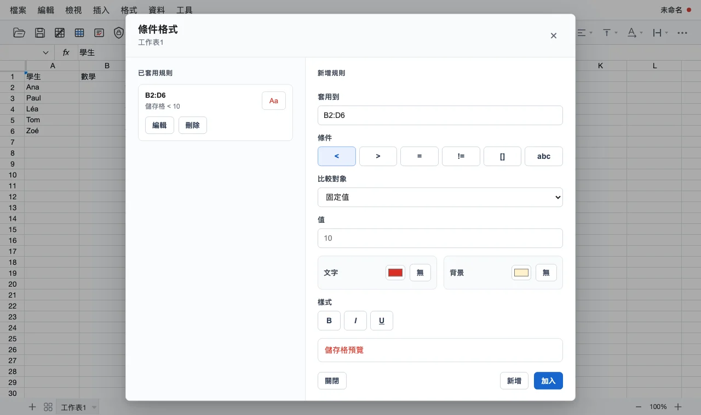

條件式格式
規則改變範圍中滿足條件的儲存格的外觀，並隨輸入或計算的值而變化。
建立規則
- 選擇範圍，不含標題。
- 或 格式 › 條件格式。
- 選擇條件、比較值、色彩或樣式。
- 加入。

| 條件 | 儲存格 |
|---|---|
< | 小於 |
> | 大於 |
= | 等於 |
!= | 不等於 |
[] | 介於兩個值之間（含端點） |
abc | 包含某文字，不區分大小寫 |
與什麼比較
| 比較對象 | 範例 |
|---|---|
| 固定值 | 低於 10 的成績 |
| 固定儲存格 | 低於 F1 中所寫界限的成績 |
| 同一列的欄 | C 欄中逐列大於 B 欄的值 |
外觀
文字 和 背景 選擇色彩，無 移除色彩；B、I、U 設為粗體、斜體、下劃線。至少需要一種色彩或樣式。
多條規則
左欄列出工作表的規則：編輯、刪除。如果多條規則適用於同一儲存格，清單中最後一條按色彩逐項優先。
在規則覆蓋的範圍中，直接給儲存格設定的文字和填滿色彩不再顯示。
規則以 Excel 條件式格式的形式儲存在 Excel 檔案中。